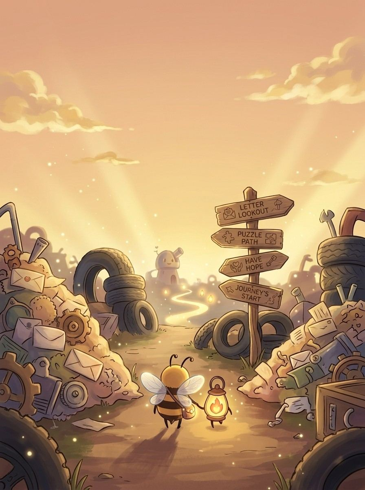
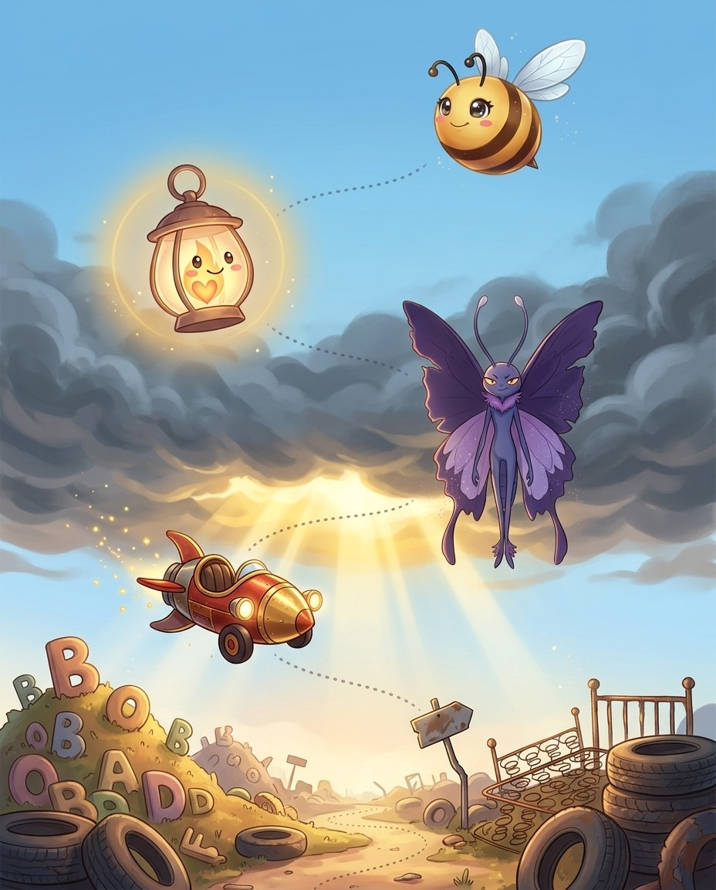
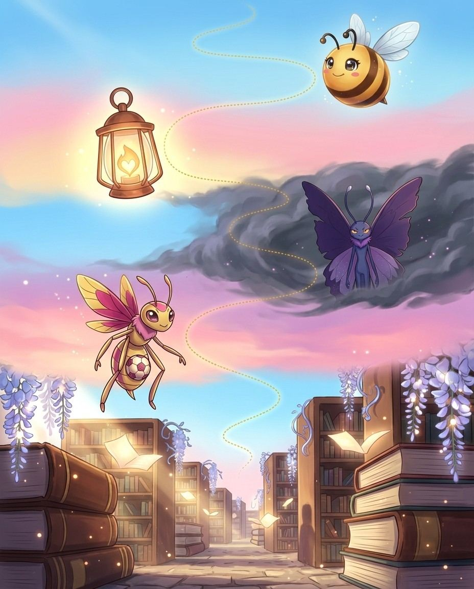
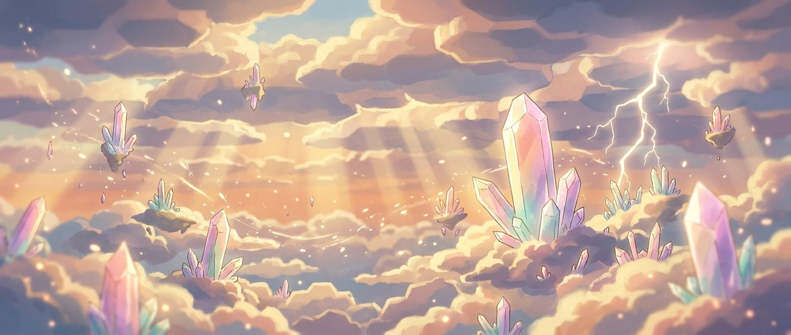
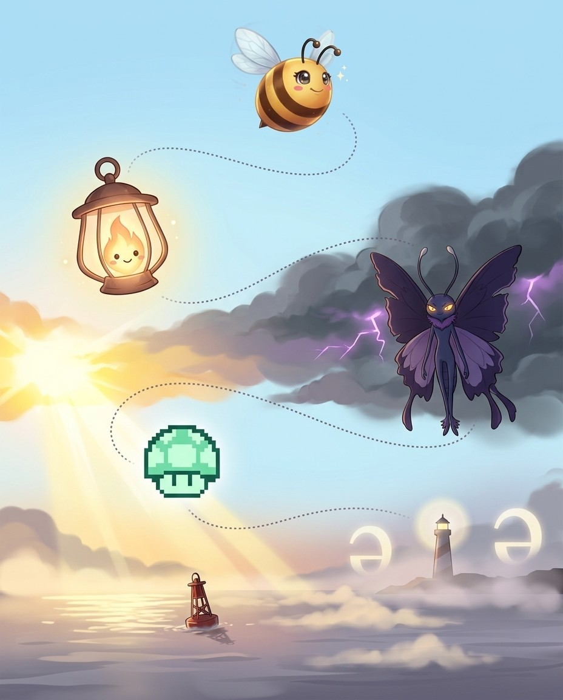

Lumen here. Science, music, law, food — words of everything — that's the route. The crew and I will keep it moving; you keep the pencil moving.
1
Read the story
Each chapter opens as a storyboard. Vex sets the trap; the crew talks you out of it.
2
Steal the pro move
The dark box is how a champion thinks on stage. It works on brand-new words too.
3
Spell out loud, then write
Say it, spell it aloud, write it. The order matters — it is how the stage will ask for it.
4
Pass the checkpoint
A short quiz on the chapter you just read. Circle your answers; the back of the book keeps the truth.
5
Play the game, then revise
Every chapter ends with a fun game, answer key at the back. Revise all words at the end and circle the ones you can spell and define.
Bizzing Bee · Subject Sprints1
Subject SprintsThe cast
Bizzy — and this book's guide, Lumen
The crew of Vol. 9
Every book travels with a crew. These nine hand you puzzles, host the checkpoints and occasionally get a line right before you do.
Bizzy — The little bee who spells the world back together, one petal at a time. · Lumen — A living spotlight that never lets the stage go dark.
Nitro
OVR 83
Champion of the Speedway
One button for a burst of pure speed.
Hover
OVR 69
Champion of the Speedway
No wheels, no limits.
Airtime
OVR 65
Speller of the Speedway
Lives for the moment all four wheels leave the ramp.
Champ
OVR 70
Champion of the Speedway
The checkered flag belongs to Champ.
Tokeny
OVR 52
Speller of the Arcade
One token, one more try.
Boss Bot
OVR 69
Champion of the Arcade
The big challenge at the end of the level.
Striker
OVR 52
Speller of the Speedway
Always first to the finish line.
1-UP
OVR 76
Champion of the Arcade
One more life, one more word — never game over.
And the other one
Vex the word-moth sneaks through every chapter, planting the exact mistakes real spellers make. Spot the trap before you step in it.
Bizzing Bee · Subject Sprints2

WELCOME TO
The Word Junkyard
Everything ever made ends up in the Junkyard — and every pile has a name.
Bizzing Bee · Subject Sprints3

1Subject-Area Vocabulary · the Word JunkyardMedical Body Systems Vocabulary
Bizzybody-part root + suffix = medical word
UH-OH!
VexSilent p in pneumonia!
GOT IT!
Nitrocardio = heart
Tokenyneuro = nerve, -itis = inflammation
♫ narratedturn the page — the whole trick, explained →
4
Chapter 1 · Medical Body Systems VocabularyThe idea · ★★☆
The big idea
Medical vocabulary follows a strict pattern: Greek or Latin body-part root + Greek suffix = a medical term. Once you know the six major body-system roots and the handful of suffixes, you can decode any medical word.
The pro move
GASTROINTESTINAL
Say it. ga-stroh-ih-NTEH-stuh-nuhl
Spell it. G · A · S · T · R · O · I · N · T · E · S · T · I · N · A · L
Say it again. ga-stroh-ih-NTEH-stuh-nuhl
Syllables. gae · strow · ih · nteh · stah · nah · l
Cardiovascular = heart + blood vessels. Myocardial (myo- = muscle) = relating to the heart muscle. Pericarditis = inflammation of the membrane around the heart.
Neuro (Brain/Nerve)
Neurological = relating to the nervous system. Neurotransmitter = chemical messenger between nerves. Encephalitis (encephalo- = brain) = brain inflammation.
Vex alert
Your ESOPHAGUS carries food—ESO(inside)+PHAG(eat)+US
Check yourself
Cover the page and spell cardiovascular · myocardial · electrocardiogram out loud. Miss one? Read the idea again — it's faster than guessing twice.
Bizzing Bee · Subject Sprints5
Chapter 1 · Medical Body Systems VocabularyPractice · ★★☆
a graphical recording of the cardiac cycle produced by an electrocardiograph
hook: An ELECTROCARDIOGRAM is an ELECTRO-CARDIO-GRAM: electricity + heart + graph — three Greek parts, one life-saving word.
The doctor studied the ▁▁▁ carefully to check whether the patient's heartbeat was regular.
neurological
/ nuu-ruh-LAH-jih-kuhl / · /nʊrəˈlɑdʒɪkəl/
of or relating to or used in or practicing neurology
hook: A NEUROn's LOGICal path through the brain makes it NEUROLOGICAl.
▁▁▁ evidence
neurotransmitter
/ nyoor-oh-TRANZ-mit-er / · /njuroʊˈtrænzmɪtər/
a neurochemical that transmits nerve impulses across a synapse
hook: NEURO + TRANSMITTER: a TRANSMITTER sends signals — a NEUROTRANSMITTER sends signals between nerve cells, spelled by joining both.
Dopamine is a ▁▁▁ that plays a key role in how we feel pleasure and stay motivated.
encephalitis
/ eh-nseh-fuh-LEYE-tuhs / · /ɛnˌsɛfəˈlaɪtəs/
inflammation of the brain usually caused by a virus; symptoms include headache and neck pain and drowsiness and nausea and fever (`phrenitis' is no longer in scientific use)
hook: Think 'en-CEPH-al' — the cephalopod uses its brain, and this is brain inflammation
After contracting the mosquito-borne virus, the hiker was hospitalized with ▁▁▁, which caused severe headaches and confusion.
Bizzing Bee · Subject Sprints6
Chapter 1 · Medical Body Systems VocabularyRapid round · ★★☆
More ammo — one line each.
meningitis/meh-nuh-NJEYE-tuhs/ infectious disease characterized by inflammation of the meninges (the tissues that surround the brain or spinal cord) usually caused by a bacterial infection; symptoms include headache and stiff neck and fever and nausea
gastrointestinal/ga-stroh-ih-NTEH-stuh-nuhl/ of or relating to the stomach and intestines
gastroenterology
esophagus/ih-SAH-fuh-guhs/ the passage between the pharynx and the stomach
peristalsis
pulmonary/PUU-lmuh-neh-ree/ relating to or affecting the lungs
pneumonia/n-oo-m-OH-n-y-uh/ is inflammation of the lungs with congestion
hematopoiesis/hee-mat-oh-poy-EE-sis/ the formation of blood cells in the living body (especially in the bone marrow)
hemoglobin/hee-muh-GLOH-buhn/ a hemoprotein composed of globin and heme that gives red blood cells their characteristic color; function primarily to transport oxygen from the lungs to the body tissues
hepatitis/heh-puh-TEYE-tuhs/ inflammation of the liver caused by a virus or a toxin
nephrology
Lock them in
Pick 4 words from above. Say each one as you write it — three times, no shortcuts. The third copy is the one your hand remembers.
Bizzing Bee · Subject Sprints7
Chapter 1 · Medical Body Systems VocabularyCheckpoint · ★★☆
Airtime · Speller of the Speedway runs the checkpoint
Do you own the idea?
Six questions on the chapter you just read. Circle your answers, then check the back. Airtime's power is Fast Forward — borrow it.
1. What does cardiovascular mean?
Ainflammation of the liver caused by a virus or a toxin
B
Ca graphical recording of the cardiac cycle produced by an electrocardiograph
Dof or pertaining to or involving the heart and blood vessels
2. What does gastrointestinal mean?
Ainflammation of the liver caused by a virus or a toxin
Bthe formation of blood cells in the living body (especially in the bone marrow)
Cof or relating to the stomach and intestines
Dthe passage between the pharynx and the stomach
3. Which spelling is correct?
Acardiovasculer
Bcardiovascular
Ccarrdiovascular
Dcerdiovascular
4. “CARDIOVASCULAR — your heart pumps through VASCUlar tubes; no extra A sneaks into VASCUL.” — which word is that about?
Apneumonia
Belectrocardiogram
Ccardiovascular
Dneurological
5. Which word fills the gap? “▁▁▁ conditioning”
Acardiovascular
Bneurotransmitter
Celectrocardiogram
Dhepatitis
6. Which word belongs to this chapter’s family?
Agenealogy
Bsyzygy
Ccardiovascular
Ddiction
Dictation round
Hand this page to anyone nearby. They read the words from the answer key (Ch. 1 dictation, at the back) — you write, no peeking.
1.
2.
Bizzing Bee · Subject Sprints8
Chapter 1 · Medical Body Systems VocabularyGame · ★★☆
Hover's puzzle page
Crossword
1
2
3
4
5
6
7
8
Across
1. is inflammation of the lungs with congestion
4. relating to or affecting the lungs
5.
7. of or relating to or used in or practicing neurology
8. the passage between the pharynx and the stomach
Down
2. of or relating to the myocardium
3. inflammation of the brain usually caused by a virus
6. symptoms include headache and stiff neck and fever and nausea
Bizzing Bee · Subject Sprints9
2Subject-Area Vocabulary · the VibeNatural Science Vocabulary
BizzyScience words = roots stacked together
UH-OH!
Vexstoichiometry = stoikheion + -metry
GOT IT!
Hoverphotosynthesis = light + together + placing
Boss Botelectrolysis = electro + lysis (breaking)
♫ narratedturn the page — the whole trick, explained →
10
Chapter 2 · Natural Science VocabularyThe idea · ★★☆
The big idea
Science vocabulary is systematically built from Greek and Latin roots. Every term follows the pattern: process + modifier + suffix. Once you know the roots, science words spell themselves.
The pro move
PHOTOSYNTHESIS
Say it. f-oh-t-oh-s-IH-n-th-uh-s-ih-s
Spell it. P · H · O · T · O · S · Y · N · T · H · E · S · I · S
Say it again. f-oh-t-oh-s-IH-n-th-uh-s-ih-s
Syllables. p · h · o · t · o · s · y · n · t · h · e · s · i · s
Photosynthesis = light + together + placing = plants converting light to food. Metamorphosis = change of form. Symbiosis = living together mutually.
Chemistry Words
Catalysis (katalysis = dissolution) = chemical reaction facilitated by a catalyst. Electrolysis (electro- + lysis = breaking) = breaking chemical bonds with electricity.
Vex alert
metaMORPHosis: the caterpillar MORPHs through a process (-osis), not an 'a'.
Check yourself
Cover the page and spell photosynthesis · metamorphosis · symbiosis out loud. Miss one? Read the idea again — it's faster than guessing twice.
the formation of carbohydrates from carbon dioxide and a source of hydrogen in chlorophyll-containing cells
hook: PHOTO-SYN-THE-SIS: plants use PHOTO (light) to SYN-THE-SIZE food — end it with -SIS like 'crisis.'
During ▁▁▁, the leaves of the sunflower convert sunlight into the energy it needs to grow.
metamorphosis
/ meh-tuh-MAW-rfuh-suhs / · /mɛtəˈmɔrfəsəs/
the marked and rapid transformation of a larva into an adult that occurs in some animals
hook: metaMORPHosis: the caterpillar MORPHs through a process (-osis), not an 'a'.
the ▁▁▁ of the old house into something new and exciting
symbiosis
/ sih-mbeye-OH-suhs / · /sɪmbaɪˈoʊsəs/
the relation between two different species of organisms that are interdependent; each gains benefits from the other
hook: SYMBIOsis — SYM + BIO: two species sharing one BIO(logy) class together, the perfect partnership.
The clownfish and the sea anemone demonstrate a classic example of ▁▁▁, each protecting and benefiting the other in the ocean.
mitosis
/ my-TOH-sis / · /maɪˈtoʊsɪs/
cell division in which the nucleus divides into nuclei containing the same number of chromosomes
hook: MITOSIS splits the cell — picture chromosomes as THREADS (mitos) being pulled apart: MI-TO-SIS.
During biology class, we watched a time-lapse video of ▁▁▁ showing one cell splitting perfectly into two identical daughter cells.
meiosis
/ meye-OH-suhs / · /maɪˈoʊsəs/
(genetics) cell division that produces reproductive cells in sexually reproducing organisms
hook: MEIOsis — MEIosis MEIns less; it REDUCES chromosome numbers in half like a sale cutting prices
During the unit on genetics, the class studied how ▁▁▁ produces four unique sex cells from a single parent cell, each with half the original chromosomes.
osmosis
/ aw-ZMOH-sihs / · /ˌɔzˈmoʊsɪs/
(biology, chemistry) diffusion of molecules through a semipermeable membrane from a place of higher concentration to a place of lower concentration until the concentration on both sides is equal
hook: OSMOsis — molecules are PUSHED (osmo) through a membrane
During the science experiment, we watched ▁▁▁ pull water through the membrane into the saltier solution, causing the bag to swell.
catalysis/kuh-TAL-uh-sis/ acceleration of a chemical reaction induced the presence of material that is chemically unchanged at the end of the reaction
electrolysis/ih-leh-KTRAH-luh-suhs/ (chemistry) a chemical decomposition reaction produced by passing an electric current through a solution containing ions
stoichiometry
electromagnetic/ih-leh-ktroh-ma-GNEH-tihk/ pertaining to or exhibiting magnetism produced by electric charge in motion
thermodynamics/thur-moh-deye-NA-mihks/ the branch of physics concerned with the conversion of different forms of energy
centrifugal/SEH-ntrih-fyoo-guhl/ tending to move away from a center
centripetal
sedimentary/seh-duh-MEH-nter-ee/ resembling or containing or formed by the accumulation of sediment
igneous/IH-gnee-uhs/ produced under conditions involving intense heat
stratigraphic
tectonic/teh-KTAH-nihk/ of or relating to the structure, movement, and deformation of the earth's crust
Lock them in
Pick 4 words from above. Say each one as you write it — three times, no shortcuts. The third copy is the one your hand remembers.
3Subject-Area Vocabulary · the Big StageFine Arts & Music Vocabulary
BizzyArts words: Italian, French, Greek
UH-OH!
Vexpirouette: -ou-, double t, silent e
GOT IT!
Airtimesyncopation = syn + koptein (cut)
Strikerarabesque = Arab + -esque (in the style of)
♫ narratedturn the page — the whole trick, explained →
16
Chapter 3 · Fine Arts & Music VocabularyThe idea · ★★☆
The big idea
Arts vocabulary draws from Italian (music), French (dance and visual arts), and Greek (theory). Knowing the language of origin immediately suggests the spelling pattern.
The pro move
CHIAROSCURO
Say it. —
Spell it. C · H · I · A · R · O · S · C · U · R · O
Say it again. —
Syllables. c · h · i · a · r · o · s · c · u · r · o
Already covered in C47 — the key spelling pattern here is the -issimo superlative (pianissimo, fortissimo) with double-s, and the -etto/-etta diminutive (allegretto).
Dance Vocabulary (French)
Arabesque (Arab + -esque) = in the Arabic style = a ballet position. Pirouette = a spinning turn. Plié (plier = to bend) = a bending movement. Jeté (jeter = to throw) = a leap.
Vex alert
A cadENZA is an Italian FRENZY of solo notes — remember the Z like the zing of a violin.
Check yourself
Cover the page and spell chiaroscuro · impasto · sfumato out loud. Miss one? Read the idea again — it's faster than guessing twice.
Bizzing Bee · Subject Sprints17
Chapter 3 · Fine Arts & Music VocabularyPractice · ★★☆
Say it. Spell it out loud. Write it.
chiaroscuro
impasto
/ im-PAH-stoh / · /ɪmˈpɑstoʊ/
painting that applies the pigment thickly so that brush or palette knife marks are visible
hook: IMPASTo: thick paint like thick PASTE pressed onto canvas
Van Gogh's masterful use of ▁▁▁ makes his paintings look almost three-dimensional, with swirling ridges of paint you want to reach out and touch.
sfumato
pointillism
arabesque
/ ar-ah-BESK / · /ɑrɑˈbɛsk/
position in which the dancer has one leg raised behind and arms outstretched in a conventional pose
hook: Arabesque ends in -ESQUE like 'picturesque' — a beautifully posed, picture-like position.
The ballerina held a flawless ▁▁▁ for several breathtaking seconds, her back leg perfectly parallel to the stage.
pirouette
/ p-ih-r-oo-EH / · /pɪruˈɛ/
is a whirling about on one foot as in ballet dancing
hook: PIROUETTE has FOUR vowels in a row (ouet) — the dancer spins four times before sticking the landing.
The ballerina completed a flawless ▁▁▁ at center stage, spinning so fast she seemed to blur.
Bizzing Bee · Subject Sprints18
Chapter 3 · Fine Arts & Music VocabularyRapid round · ★★☆
More ammo — one line each.
syncopation/SIH-ngkuh-pay-shuhn/ (phonology) the loss of sounds from within a word (as in `fo'c'sle' for `forecastle')
counterpoint/KOW-nter-poynt/ a musical form involving the simultaneous sound of two or more melodies
cadenza/kah-DEN-zah/ a brilliant solo passage occurring near the end of a piece of music
leitmotif/LEYE-tmoh-teef/ a melodic phrase that accompanies the reappearance of a person or situation (as in Wagner's operas)
colonnade/k-ah-l-uh-n-AY-d/ a series of regularly spaced columns
tympanum/TIH-mpuh-nuhm/ the main cavity of the ear; between the eardrum and the inner ear
buttress/BUH-truhs/ a support usually of stone or brick; supports the wall of a building
fenestration/fen-es-TRAY-shun/ the arrangement of windows in a building
diminuendo
crescendo/krih-SHEH-ndoh/ (music) a gradual increase in loudness
Lock them in
Pick 4 words from above. Say each one as you write it — three times, no shortcuts. The third copy is the one your hand remembers.
Bizzing Bee · Subject Sprints19
Chapter 3 · Fine Arts & Music VocabularyCheckpoint · ★★☆
Tokeny · Speller of the Arcade runs the checkpoint
Do you own the idea?
Six questions on the chapter you just read. Circle your answers, then check the back. Tokeny's power is Big Brain — borrow it.
1. What does pirouette mean?
A
Bis a whirling about on one foot as in ballet dancing
Ca brilliant solo passage occurring near the end of a piece of music
Da melodic phrase that accompanies the reappearance of a person or situation (as in Wagner's operas)
2. What does pointillism mean?
A
B(phonology) the loss of sounds from within a word (as in `fo'c'sle' for `forecastle')
Ca series of regularly spaced columns
D(music) a gradual increase in loudness
3. Which spelling is correct?
Afinestration
Bfennestration
Cfenestration
Dfenestrasion
4. “PIROUETTE has FOUR vowels in a row (ouet) — the dancer spins four times before sticking the landing.” — which word is that about?
Aimpasto
Bleitmotif
Cbuttress
Dpirouette
5. Which word fills the gap? “The ballerina completed a flawless ▁▁▁ at center stage, spinning so fast she seemed to blur.”
Acadenza
Bbuttress
Carabesque
Dpirouette
6. Which word belongs to this chapter’s family?
Aintransigent
Bconnoisseur
Cpirouette
Dunkempt
Dictation round
Hand this page to anyone nearby. They read the words from the answer key (Ch. 3 dictation, at the back) — you write, no peeking.
1.
2.
Bizzing Bee · Subject Sprints20
Chapter 3 · Fine Arts & Music VocabularyGame · ★★☆
Champ's puzzle page
Scramble & rescue
Unscramble
otumasf
niiounemdd
teiofesrntna
plimoilnsit
soitpam
aypmmtnu
Rescue the vowels
l__tm_t_f
c_l_nn_d_
c__nt_rp__nt
d_m_n__nd_
p__nt_ll_sm
_mp_st_
Bizzing Bee · Subject Sprints21
4Subject-Area Vocabulary · the Proving GroundCulinary Vocabulary
BizzyFood words follow their home language
UH-OH!
Vexroux = R-O-U-X, silent x
GOT IT!
ChampItalian -sch- = /sk/, -sci- = /sh/
1-UPmirepoix: -oi- = /wah/ (French)
♫ narratedturn the page — the whole trick, explained →
22
Chapter 4 · Culinary VocabularyThe idea · ★★☆
The big idea
Food vocabulary is international — French dominates professional cooking, Italian contributes pasta and cheese terms, Spanish adds chili and spice words, Japanese contributes specific techniques. The spelling signals follow language of origin.
The pro move
JULIENNE
Say it. joo-lee-EN
Spell it. J · U · L · I · E · N · N · E
Say it again. joo-lee-EN
Syllables. ju · li · enne
Sounds → Letters. [joo=JU] [lee=LI] [EN=ENNE]
French Cooking Terms (Professional)
Julienne = vegetables cut in thin matchsticks. Brunoise = vegetables cut in tiny cubes. Mirepoix = diced onion, celery, carrot base (-oi- = /wah/ French pattern).
Remember the hidden 'r': tur-MER-ic, not tu-MER-ic — there's an 'r' in the middle.
Sound trap
roux sounds like rue — at the mic, always ask for the meaning.
Check yourself
Cover the page and spell julienne · brunoise · mirepoix out loud. Miss one? Read the idea again — it's faster than guessing twice.
Bizzing Bee · Subject Sprints23
Chapter 4 · Culinary VocabularyPractice · ★★☆
Say it. Spell it out loud. Write it.
julienne
/ joo-lee-EN / · /dʒuliˈɛn/
a vegetable cut into thin strips (usually used as a garnish)
hook: JULIENne: JULIEN the French chef cuts everything into thin strips
The chef ▁▁▁ the carrots and zucchini into perfectly uniform strips before arranging them in a colorful fan across the plate.
brunoise
/ broo-NWAZ / · /bruˈnwæz/
A culinary technique in which vegetables or other foods are cut into very small, uniform cubes approximately one to three millimeters on each side, used to create fine garnishes or flavor bases.
hook: BRUNOISE: think 'brew noise in tiny cubes'—say bru-NWAZ, a French tiny-dice cut.
The chef's ▁▁▁ of carrots and celery was so perfectly uniform it looked machine-cut.
mirepoix
roux
/ ROO / · /ˈru/
a mixture of fat and flour heated and used as a basis for sauces
hook: A ROUX sounds like 'roo' but hides an X at the end — think of a kangaroo chef making a sauce, signing with an X.
She whisked the ▁▁▁ carefully over low heat until it turned a deep golden brown before adding the broth.
bruschetta
/ broo-SKEH-tah / · /bruˈskɛtɑ/
toasted bread rubbed with garlic and topped with olive oil, tomatoes, and herbs
hook: BRUSCHETTA has no SH — it's broo-SKET-ta; the SC makes a K sound, like a knife scraping toast.
At the Italian restaurant, we started with crispy ▁▁▁ topped with fresh tomatoes and basil.
prosciutto
/ pruh-SHOO-toh / · /prəˈʃutoʊ/
Italian salt-cured ham usually sliced paper thin
hook: Say it like 'pruh-SHOO-toh'
The chef draped thin slices of ▁▁▁ over the ripe melon for a classic Italian appetizer.
Bizzing Bee · Subject Sprints24
Chapter 4 · Culinary VocabularyRapid round · ★★☆
More ammo — one line each.
ossobuco
risotto/ree-SAW-toh/ rice cooked with broth and sprinkled with grated cheese
carpaccio
saffron/s-A-f-r-uh-n/ is a crocus having showy purple flowers
turmeric/TUR-muh-rihk/ widely cultivated tropical plant of India having yellow flowers and a large aromatic deep yellow rhizome; source of a condiment and a yellow dye
cardamom/KAH-rduh-muhm/ rhizomatous herb of India having aromatic seeds used as seasoning
worcestershire/WUU-ster-sher/ a savory sauce of vinegar and soy sauce and spices
teriyaki/teh-rih-YAH-kee/ beef or chicken or seafood marinated in spicy soy sauce and grilled or broiled
edamame/ed-uh-MAH-may/ young soybeans harvested while still green and tender, typically served steamed in their pods and lightly salted, popular as a snack especially in Japanese cuisine
soufflé/soo-FLAY/ light fluffy dish of egg yolks and stiffly beaten egg whites mixed with e.g. cheese or fish or fruit
amuse-bouche
Lock them in
Pick 4 words from above. Say each one as you write it — three times, no shortcuts. The third copy is the one your hand remembers.
Bizzing Bee · Subject Sprints25
Chapter 4 · Culinary VocabularyCheckpoint · ★★☆
Boss Bot · Champion of the Arcade runs the checkpoint
Do you own the idea?
Six questions on the chapter you just read. Circle your answers, then check the back. Boss Bot's power is Mind Palace — borrow it.
1. What does amuse-bouche mean?
Ais a crocus having showy purple flowers
Ba vegetable cut into thin strips (usually used as a garnish)
Crice cooked with broth and sprinkled with grated cheese
D
2. What does ossobuco mean?
A
BItalian salt-cured ham usually sliced paper thin
Ca mixture of fat and flour heated and used as a basis for sauces
D
3. “Remember the hidden 'r': tur-MER-ic, not tu-MER-ic — there's an 'r' in the middle.” — which word is that about?
Aturmeric
Brisotto
Cossobuco
Dbruschetta
4. Which word fills the gap? “My grandmother stirred a teaspoon of golden ▁▁▁ into the simmering soup, filling the kitchen with a warm, earthy fragrance.”
Aturmeric
Bprosciutto
Camuse-bouche
Drisotto
5. Which word belongs to this chapter’s family?
Asynchronize
Begregious
Camuse-bouche
Dboudoir
Dictation round
Hand this page to anyone nearby. They read the words from the answer key (Ch. 4 dictation, at the back) — you write, no peeking.
1.
2.
Bizzing Bee · Subject Sprints26
Chapter 4 · Culinary VocabularyGame · ★★☆
Tokeny's puzzle page
Crossword
1
2
3
4
5
6
7
8
9
10
Across
2.
3. A culinary technique in which vegetables or other foods are cut into very small
6. toasted bread rubbed with garlic and topped with olive oil, tomatoes, and herbs
9.
10. rice cooked with broth and sprinkled with grated cheese
Down
1. a vegetable cut into thin strips (usually used as a garnish)
4. Italian salt-cured ham usually sliced paper thin
5.
7. is a crocus having showy purple flowers
8. a mixture of fat and flour heated and used as a basis for sauces
Bizzing Bee · Subject Sprints27
5Subject-Area Vocabulary · the Grey SeaGeography & Place Words
BizzyPlace words come from many languages
UH-OH!
Vexisthmus: the -sthm- cluster
GOT IT!
Tokenypeninsula = paene + insula (almost an island)
Mechfjord: the Norse fj- cluster
♫ narratedturn the page — the whole trick, explained →
28
Chapter 5 · Geography & Place WordsThe idea · ★☆☆
The big idea
Geographical vocabulary draws from multiple languages — Greek for landform concepts, Spanish and Portuguese for the Americas, Arabic for Middle Eastern geography, and Old Norse for Scandinavian features. Origin signals spelling.
The pro move
ARCHIPELAGO
Say it. ah-rkuh-PEH-luh-goh
Spell it. A · R · C · H · I · P · E · L · A · G · O
Archipelago (arkhi- + pelagos = sea) = a group of islands in a sea. Peninsula (paene = almost + insula = island) = a land almost surrounded by water.
Water Words
Estuary (aestus = tide) = a tidal river mouth where fresh and salt water meet. Lagoon (Italian laguna from Latin lacuna = pool) = a shallow body of water.
Vex alert
A savanna has one 'n' in the middle — one vast, open plain with nothing to crowd it.
Sound trap
savanna sounds like savannah — at the mic, always ask for the meaning.
Check yourself
Cover the page and spell archipelago · peninsula · isthmus out loud. Miss one? Read the idea again — it's faster than guessing twice.
Bizzing Bee · Subject Sprints29
Chapter 5 · Geography & Place WordsPractice · ★☆☆
Say it. Spell it out loud. Write it.
archipelago
/ ah-rkuh-PEH-luh-goh / · /ɑrkəˈpɛləɡoʊ/
a group of many islands in a large body of water
hook: ARCHipelago: the ARCH chief of the SEA holds many islands — spell out arch-i-pel-a-go like stepping stones between islands.
The sailors navigated carefully through the ▁▁▁, weaving between dozens of rocky islands.
peninsula
/ puh-NIH-nsuh-luh / · /pəˈnɪnsələ/
a large mass of land projecting into a body of water
hook: A peninsula is 'almost an island' — pen+insula, one 'n', like a pen pointing into water.
The small fishing village sat at the tip of a rocky ▁▁▁ surrounded by crashing waves on three sides.
isthmus
/ IH-s-m-uh-s / · /ˈɪsməs/
is a narrow strip of land with water on both sides
hook: An isTHMus has a silent TH—think of it as the thin, quiet strip of land squeezed between two seas.
The narrow ▁▁▁ of Panama connects North America and South America by a thin strip of land.
escarpment
/ eh-SKAH-rpmuhnt / · /ɛˈskɑrpmənt/
a long steep slope or cliff at the edge of a plateau or ridge; usually formed by erosion
hook: An esCARP ment has a CARP-shaped sharp drop — imagine a fish leaping off a cliff
The hikers paused at the top of the ▁▁▁ to gaze over the vast valley hundreds of feet below.
estuary
/ EH-schoo-eh-ree / · /ˈɛstʃuɛri/
the wide part of a river where it nears the sea; fresh and salt water mix
hook: An ESTUary is where the ESTUS (tide) meets the river — it's a tidal mixing zone.
The biology class traveled to the ▁▁▁ to observe the unique mix of plants and animals that thrive where the river meets the ocean.
lagoon
/ l-uh-g-OO-n / · /ləɡˈun/
is an area of shallow water separated from the sea by sandy dunes
hook: A LAGOON has double O like the two round eyes of a calm, enclosed pool of water.
The children snorkeled in the calm, crystal-clear ▁▁▁ sheltered by a ring of white sand.
Bizzing Bee · Subject Sprints30
Chapter 5 · Geography & Place WordsRapid round · ★☆☆
More ammo — one line each.
fjord/FYAWRD/ a long narrow inlet of the sea between steep cliffs; common in Norway
bayou/b-AY-oo/ is a marshy arm of a river usually sluggish or stagnant
savanna/suh-VA-nuh/ a flat grassland in tropical or subtropical regions
tundra/TUH-ndruh/ a vast treeless plain in the Arctic regions where the subsoil is permanently frozen
chaparral/sh-a-p-ur-A-l/ is a dense growth of shrubs or trees
taiga/TY-guh/ The vast boreal forest biome found across northern regions of Russia, Canada, and Scandinavia, characterized by dense coniferous trees such as spruce, fir, and pine.
canyon/KA-nyuhn/ a ravine formed by a river in an area with little rainfall
mesa/MAY-suh/ flat tableland with steep edges
arroyo/er-OY-oh/ a stream or brook
pampa
veldt/VELT/ elevated open grassland in southern Africa
Lock them in
Pick 4 words from above. Say each one as you write it — three times, no shortcuts. The third copy is the one your hand remembers.
Bizzing Bee · Subject Sprints31
Chapter 5 · Geography & Place WordsCheckpoint · ★☆☆
Striker · Speller of the Speedway runs the checkpoint
Do you own the idea?
Six questions on the chapter you just read. Circle your answers, then check the back. Striker's power is Fast Forward — borrow it.
1. What does peninsula mean?
Ais a marshy arm of a river usually sluggish or stagnant
Ba stream or brook
Cis a dense growth of shrubs or trees
Da large mass of land projecting into a body of water
2. What does lagoon mean?
Ais a marshy arm of a river usually sluggish or stagnant
Ba long narrow inlet of the sea between steep cliffs; common in Norway
Celevated open grassland in southern Africa
Dis an area of shallow water separated from the sea by sandy dunes
3. Which spelling is correct?
Alagon
Blegoon
Claggoon
Dlagoon
4. “A peninsula is 'almost an island' — pen+insula, one 'n', like a pen pointing into water.” — which word is that about?
Apeninsula
Bestuary
Cchaparral
Dsavanna
5. Which word fills the gap? “The small fishing village sat at the tip of a rocky ▁▁▁ surrounded by crashing waves on three sides.”
Amesa
Bescarpment
Cchaparral
Dpeninsula
6. Which word belongs to this chapter’s family?
Aconfer
Beffervescence
Cpeninsula
Ddialogue
Dictation round
Hand this page to anyone nearby. They read the words from the answer key (Ch. 5 dictation, at the back) — you write, no peeking.
6Subject-Area Vocabulary · the MeadowLaw & Government Vocabulary
BizzyLaw ran on Latin for centuries
UH-OH!
Vexsubpoena = sub + poena (penalty)
GOT IT!
Boss Botoligarchy = oligos (few) + arkhein (rule)
Nitrojurisprudence = juris (of law) + prudentia
♫ narratedturn the page — the whole trick, explained →
34
Chapter 6 · Law & Government VocabularyThe idea · ★★★
The big idea
Legal and governmental vocabulary draws almost entirely from Latin — English law was conducted in Latin for centuries. These words follow strict Latin spelling rules and appear frequently in championship bees.
The pro move
JURISPRUDENCE
Say it. juu-ruh-SPROO-duhns
Spell it. J · U · R · I · S · P · R · U · D · E · N · C · E
Habeas corpus (habeas = you should have + corpus = body) = the right to appear before a court. Subpoena (sub- + poena = penalty) = under penalty = a legal demand to appear.
Types of Government
Oligarchy (oligos = few + arkhein = rule) = rule by a few. Plutocracy (ploutos = wealth + kratos) = rule by the wealthy. Theocracy (theos = god + kratos) = rule by divine authority.
Vex alert
JURISPRUDENCE ends in -ENCE not -ANCE — it takes PRUDENCE (wisdom) to practice jurisPRUDENCE.
Check yourself
Cover the page and spell jurisprudence · habeas corpus · subpoena out loud. Miss one? Read the idea again — it's faster than guessing twice.
Bizzing Bee · Subject Sprints35
Chapter 6 · Law & Government VocabularyPractice · ★★★
Say it. Spell it out loud. Write it.
jurisprudence
/ juu-ruh-SPROO-duhns / · /ˌdʒʊrəˈsprudəns/
the branch of philosophy concerned with the law and the principles that lead courts to make the decisions they do
hook: JURISPRUDENCE ends in -ENCE not -ANCE — it takes PRUDENCE (wisdom) to practice jurisPRUDENCE.
civilization presupposes respect for the law
habeas corpus
subpoena
/ s-uh-p-EE-n-uh / · /səpˈinə/
is the usual writ for the summoning of witnesses
hook: subPOENA has POEtic justice — the OE together means penalty is hiding in plain sight.
a diplomat who is fully authorized to represent his or her government
hook: PLENI (full) + POTENT (powerful): someone with FULL POWER to negotiate
The ▁▁▁ arrived in the capital city with the authority to sign the peace treaty on behalf of her entire nation.
adjudicate
/ uh-JOO-dih-kayt / · /əˈdʒudɪkeɪt/
put on trial or hear a case and sit as the judge at the trial of; to make a formal judgment
hook: A JUDGE adjudicates — both share judic
The experienced judge was asked to ▁▁▁ the dispute between the two competing robotics teams at the regional competition.
promulgate
/ proh-MUH-lgayt / · /proʊˈmʌlɡeɪt/
state or announce
hook: PRO-mulgators speak FORTH to make laws public
The school board voted to ▁▁▁ new guidelines about technology use in classrooms before the new semester began.
Bizzing Bee · Subject Sprints36
Chapter 6 · Law & Government VocabularyRapid round · ★★★
More ammo — one line each.
ratify/RA-tuh-feye/ approve and express assent, responsibility, or obligation
filibuster/FIH-luh-buh-ster/ a legislator who gives long speeches in an effort to delay or obstruct legislation that he (or she) opposes
gerrymander/j-EH-r-ee-m-a-n-d-ur/ is dividing election districts to suit one group or party
oligarchy/AH-luh-gah-rkee/ a political system governed by a few people
plutocracy/ploo-TOK-ruh-see/ a political system governed by the wealthy people
theocracy/th-ee-AH-k-r-uh-s-ee/ is a form of government in which a deity is recognized as the supreme civil ruler
kleptocracy
meritocracy/meh-rih-TAW-kruh-see/ a form of social system in which power goes to those with superior intellects
abrogation/a-bruh-GAY-shuhn/ the act of abrogating; an official or legal cancellation
bicameral/by-KAM-er-ul/ composed of two legislative bodies
Lock them in
Pick 4 words from above. Say each one as you write it — three times, no shortcuts. The third copy is the one your hand remembers.
Bizzing Bee · Subject Sprints37
Chapter 6 · Law & Government VocabularyCheckpoint · ★★★
1-UP · Champion of the Arcade runs the checkpoint
Do you own the idea?
Six questions on the chapter you just read. Circle your answers, then check the back. 1-UP's power is Unflappable — borrow it.
1. What does jurisprudence mean?
Aput on trial or hear a case and sit as the judge at the trial of; to make a formal judgment
Ba form of social system in which power goes to those with superior intellects
Ca political system governed by the wealthy people
Dthe branch of philosophy concerned with the law and the principles that lead courts to make the decisions they do
2. What does adjudicate mean?
A
Bput on trial or hear a case and sit as the judge at the trial of; to make a formal judgment
Cstate or announce
Da form of social system in which power goes to those with superior intellects
3. Which spelling is correct?
Afilibuster
Bfilibustar
Cfelibuster
Dfillibuster
4. “JURISPRUDENCE ends in -ENCE not -ANCE — it takes PRUDENCE (wisdom) to practice jurisPRUDENCE.” — which word is that about?
Ajurisprudence
Babrogation
Csubpoena
Dmeritocracy
Dictation round
Hand this page to anyone nearby. They read the words from the answer key (Ch. 6 dictation, at the back) — you write, no peeking.
1.
2.
Bizzing Bee · Subject Sprints38
Chapter 6 · Law & Government VocabularyGame · ★★★
Striker's puzzle page
Scramble & rescue
Unscramble
orccahety
amaricleb
tcryeicoarm
uemgloatrp
rereydnmarg
irfayt
Rescue the vowels
kl_pt_cr_cy
th__cr_cy
pr_m_lg_t_
m_r_t_cr_cy
g_rrym_nd_r
_br_g_t__n
Bizzing Bee · Subject Sprints39

7Subject-Area Vocabulary · the Great LibraryWords from Greek & Roman Mythology
BizzyGods & heroes became everyday words
UH-OH!
VexGreek -th- and y-as-a-vowel are the clues
Strikervolcano ← Vulcan; panic ← Pan
Hoverherculean ← Hercules; tantalize ← Tantalus
♫ narratedturn the page — the whole trick, explained →
40
Chapter 7 · Words from Greek & Roman MythologyThe idea · ★★☆
The big idea
Mythology generated hundreds of English words through the names of gods, heroes, and places. These words often have unusual spellings — because they come from Greek or Latin proper names, not from common roots.
Panic = from Pan (Greek goat-god who caused sudden terror). Volcano = from Vulcan (Roman god of fire). Cereal = from Ceres (Roman goddess of grain).
Heroes → Adjectives
Herculean = of Hercules = requiring enormous strength. Promethean = of Prometheus = boldly creative, fire-stealing. Quixotic = of Don Quixote (literary, not mythological) = impractically idealistic.
Vex alert
TANTALIZE contains TANTALUS
Sound trap
cereal sounds like serial — at the mic, always ask for the meaning.
Check yourself
Cover the page and spell promethean · herculean · quixotic out loud. Miss one? Read the idea again — it's faster than guessing twice.
Bizzing Bee · Subject Sprints41
Chapter 7 · Words from Greek & Roman MythologyPractice · ★★☆
Say it. Spell it out loud. Write it.
promethean
/ pruh-MEE-thee-un / · /prəˈmiθiʌn/
Daringly original and creative, or relating to a bold, rebellious spirit; inspired by the Greek Titan Prometheus who defied the gods.
hook: Prometheus stole fire — spell his name with EAN at the end, like a heroic LEAN forward into flames.
Her ▁▁▁ drive to invent new technologies changed the way millions of people communicate.
herculean
/ her-KYOO-lee-uhn / · /hərˈkjuliən/
displaying superhuman strength or power
hook: Think of HERCULES — herculEAN comes straight from his name.
Moving all those waterlogged sandbags before the flood arrived was a ▁▁▁ task that left the volunteers exhausted but proud.
quixotic
/ kwih-KSAH-tihk / · /kwɪˈksɑtɪk/
not sensible about practical matters; idealistic and unrealistic
hook: QuiXOTic has an X because the hero crossed out reality with impossible dreams.
as ▁▁▁ as a restoration of medieval knighthood
labyrinth
/ l-A-b-ur-ih-n-th / · /lˈæbʌrɪnθ/
is an intricate combination of paths
hook: LABYrinth has a BABY inside it — even a baby would get lost in a maze!
The ancient ▁▁▁ beneath the castle had so many twisting passages that explorers often got lost.
marathon
/ MEH-ruh-thahn / · /ˈmɛrəθɑn/
any long and arduous undertaking
hook: MARAthon — a MARA-vel of endurance; think of the messenger who ran from MARA-thon to Athens
Studying for finals felt like a ▁▁▁ as Jaylen sat at his desk for six straight hours reviewing every chapter.
laconic
/ l-ah-k-AH-n-ih-k / · /lɑkˈɑnɪk/
is using few words being concise
hook: Spartans from LACONIA said little — laconic means little talk.
Coach Rivera was famously ▁▁▁ before big games, offering her team nothing more than a quiet nod and the words 'You know what to do,' yet somehow those five words inspired more confidence than any long speech ever could.
Bizzing Bee · Subject Sprints42
Chapter 7 · Words from Greek & Roman MythologyRapid round · ★★☆
More ammo — one line each.
draconian/dray-KOH-nee-uhn/ of or relating to Draco or his harsh code of laws
tantalize/t-A-n-t-uh-l-ay-z/ To tantalize someone means to torment them by keeping something desirable just out of their reach.
siren/SEYE-ruhn/ a sea nymph (part woman and part bird) supposed to lure sailors to destruction on the rocks where the nymphs lived
volcano/vah-LKAY-noh/ a fissure in the earth's crust (or in the surface of some other planet) through which molten lava and gases erupt
cereal/s-IH-r-ee-uh-l/ a prepared food of grain such as oatmeal or cornflakes eaten especially for breakfast
music/MYOO-zihk/ vocal or instrumental sounds having rhythm, melody, or harmony.
ocean/OH-shuhn/ a large body of water constituting a principal part of the hydrosphere
chaos/KAY-ahs/ a state of extreme confusion and disorder
mercurial/mer-KYUU-ree-uhl/ liable to sudden unpredictable change
jovial/JOH-vee-uhl/ full of or showing high-spirited merriment; ; - Wordsworth
narcissism/n-AH-r-s-ih-s-ih-z-uh-m/ is excessive self-love vanity
Lock them in
Pick 4 words from above. Say each one as you write it — three times, no shortcuts. The third copy is the one your hand remembers.
Bizzing Bee · Subject Sprints43
Chapter 7 · Words from Greek & Roman MythologyCheckpoint · ★★☆
Mech · Champion of the Speedway runs the checkpoint
Do you own the idea?
Six questions on the chapter you just read. Circle your answers, then check the back. Mech's power is Power Core — borrow it.
1. What does marathon mean?
Aa state of extreme confusion and disorder
Bis excessive self-love vanity
Cis an intricate combination of paths
Dany long and arduous undertaking
2. What does music mean?
Aof or relating to Draco or his harsh code of laws
Bvocal or instrumental sounds having rhythm, melody, or harmony.
Ca state of extreme confusion and disorder
Da prepared food of grain such as oatmeal or cornflakes eaten especially for breakfast
3. “MARAthon — a MARA-vel of endurance; think of the messenger who ran from MARA-thon to Athens” — which word is that about?
Ajovial
Bherculean
Cquixotic
Dmarathon
4. Which word fills the gap? “Studying for finals felt like a ▁▁▁ as Jaylen sat at his desk for six straight hours reviewing every chapter.”
Amercurial
Bmarathon
Ccereal
Dherculean
5. Which word belongs to this chapter’s family?
Amanuscript
Bschadenfreude
Cinvert
Dmarathon
Dictation round
Hand this page to anyone nearby. They read the words from the answer key (Ch. 7 dictation, at the back) — you write, no peeking.
1.
2.
Bizzing Bee · Subject Sprints44
Chapter 7 · Words from Greek & Roman MythologyGame · ★★☆
1-UP's puzzle page
Crossword
1
2
3
4
5
6
7
8
9
10
Across
1. not sensible about practical matters; idealistic and unrealistic
4. a sea nymph (part woman and part bird) supposed to lure sailors to destruction on…
6. is an intricate combination of paths
7. Daringly original and creative
9. of or relating to Draco or his harsh code of laws
10. a fissure in the earth's crust (or in the surface of some other planet) through…
Down
2. To ▁▁▁ someone means to torment them by keeping something desirable just out…
3. is using few words being concise
5. displaying superhuman strength or power
8. any long and arduous undertaking
Bizzing Bee · Subject Sprints45
8Subject-Area Vocabulary · the Roman ForumWords About Time (Beyond chron-)
♫ narratedturn the page — the whole trick, explained →
46
Chapter 8 · Words About Time (Beyond chron-)The idea · ★★☆
The big idea
Time vocabulary extends far beyond chron-. Latin tempus, Greek aion, and hora all generate time words — plus poetic and philosophical time concepts that appear in advanced vocabulary rounds.
Ephemeral (epi- + hemera = day) = lasting only a day = short-lived. Transient (trans- + ire = go across) = passing across quickly = temporary. Fleeting (Old English fleon = to flee) = passing quickly.
tempus (Latin time)
Temporal (tempus = time) = relating to time (vs spiritual). Temporary = lasting for a limited time. Contemporary (con- + tempus) = existing at the same time.
Vex alert
EPHEMERAL: 'Every Petal Has Every Morning Erased, Really A Loss' — beauty gone by dawn.
Check yourself
Cover the page and spell ephemeral · transient · momentary out loud. Miss one? Read the idea again — it's faster than guessing twice.
Bizzing Bee · Subject Sprints47
Chapter 8 · Words About Time (Beyond chron-)Practice · ★★☆
Say it. Spell it out loud. Write it.
ephemeral
/ ih-f-EH-m-ur-uh-l / · /ɪfˈɛmʌrəl/
is lasting a very short time
hook: EPHEMERAL: 'Every Petal Has Every Morning Erased, Really A Loss' — beauty gone by dawn.
the ▁▁▁ joys of childhood
transient
/ t-r-A-n-zh-uh-n-t / · /trˈænʒənt/
means not lasting or enduring
hook: TRANS-I-ENT: a transient is briefly going across — remember the I before ENT, like a tiny visitor passing through.
The joy of winning the spelling bee was intense but ▁▁▁, quickly replaced by the nervous excitement of preparing for the next, far more difficult round of competition.
momentary
/ MOH-muh-nteh-ree / · /ˈmoʊmənˌtɛri/
lasting for a markedly brief time
hook: A MOMENTARY thing relates to a MOMENT — keep the -ARY ending like 'temporary.'
The ▁▁▁ flash of lightning lit up the entire night sky so brilliantly that everyone standing on the porch gasped in surprise before darkness returned.
temporal
/ TEH-mper-uhl / · /ˈtɛmpərəl/
the semantic role of the noun phrase that designates the time of the state or action denoted by the verb
hook: TEMPORAL relates to time — it holds TEMPOR(ary) inside, reminding you that time is always fleeting.
▁▁▁ matters of but fleeting moment
temporary
/ TEH-mper-eh-ree / · /ˈtɛmpərɛri/
a worker (especially in an office) hired on a temporary basis
hook: Temporary has an A before the R — think 'A temp works A while' to remember the -ary ending.
politics is an impermanent factor of life
contemporary
/ kuh-NTEH-mper-eh-ree / · /kəˈntɛmpərɛri/
a person of nearly the same age as another
hook: A CONTEMPORARY shares your TIME — find TEMPOR (time) hiding inside, then add '-ary'.
▁▁▁ trends in design
Bizzing Bee · Subject Sprints48
Chapter 8 · Words About Time (Beyond chron-)Rapid round · ★★☆
More ammo — one line each.
extemporaneous/ek-stem-puh-RAY-nee-us/ is done without special preparation
aeon/EE-on/ (Gnosticism) a divine power or nature emanating from the Supreme Being and playing various roles in the operation of the universe
medieval/mih-DEE-vuhl/ relating to or belonging to the Middle Ages
primeval/preye-MEE-vuhl/ having existed from the beginning; in an earliest or original stage or state
coeval/koh-EE-vuhl/ a person of nearly the same age as another
longevity/law-NJEH-vuh-tee/ duration of service
horology/hoh-ROL-oh-jee/ the art of designing and making clocks
diurnal/deye-UR-nuhl/ of or belonging to or active during the day
nocturnal/n-ah-k-t-UR-n-uh-l/ is of or pertaining to the night
evanescent/eh-vuh-NEH-suhnt/ tending to vanish like vapor; quickly fading or disappearing
Lock them in
Pick 4 words from above. Say each one as you write it — three times, no shortcuts. The third copy is the one your hand remembers.
Bizzing Bee · Subject Sprints49
Chapter 8 · Words About Time (Beyond chron-)Checkpoint · ★★☆
Nitro · Champion of the Speedway runs the checkpoint
Do you own the idea?
Six questions on the chapter you just read. Circle your answers, then check the back. Nitro's power is Fast Forward — borrow it.
1. What does extemporaneous mean?
Ais done without special preparation
Btending to vanish like vapor; quickly fading or disappearing
Cis lasting a very short time
Dthe semantic role of the noun phrase that designates the time of the state or action denoted by the verb
2. What does horology mean?
Aa worker (especially in an office) hired on a temporary basis
Bmeans not lasting or enduring
Cthe art of designing and making clocks
Dhaving existed from the beginning; in an earliest or original stage or state
3. Which spelling is correct?
Amedieval
Bmeddieval
Cmidieval
Dmedeival
4. “EX TEMPORE means 'out of the moment'—no prep time!” — which word is that about?
Anocturnal
Bextemporaneous
Ctransient
Dtemporary
5. Which word fills the gap? “She studied ▁▁▁ at a Swiss institute before opening her own clock-repair shop.”
Anocturnal
Baeon
Chorology
Dmedieval
6. Which word belongs to this chapter’s family?
Aextemporaneous
Binvert
Cexport
Dbouquet
Dictation round
Hand this page to anyone nearby. They read the words from the answer key (Ch. 8 dictation, at the back) — you write, no peeking.
1.
2.
Bizzing Bee · Subject Sprints50
Chapter 8 · Words About Time (Beyond chron-)Game · ★★☆
9Subject-Area Vocabulary · the Storm of ElementsWords About Size & Quantity
BizzyRoots for big, small, many & few
UH-OH!
Vexminuscule = -us- not -is-; myriad's y
Mechtiny: diminutive, infinitesimal
Champcolossal ← Colossus; gargantuan ← Gargantua
♫ narratedturn the page — the whole trick, explained →
52
Chapter 9 · Words About Size & QuantityThe idea · ★★☆
The big idea
Size and quantity vocabulary comes from both number prefixes (already covered) and from Latin and Greek roots for big/small, many/few. These combine with other roots to make precise measurement words.
The pro move
MINUSCULE
Say it. m-IH-n-uh-s-k-y-oo-l
Spell it. M · I · N · U · S · C · U · L · E
Say it again. m-IH-n-uh-s-k-y-oo-l
Syllables. m · i · n · u · s · c · u · l · e
Sounds → Letters. [MIN=MIN] [uh=US] [skyool=CULE]
Tiny Words
Minuscule (minusculus = rather small) = tiny — NOT miniscule (a misspelling caused by confusing with mini-). Infinitesimal (infinitus = without end + -esimal = fraction) = immeasurably tiny.
Large Words
Colossal (from the Colossus of Rhodes) = enormous. Titanic (from the Titans) = of enormous size and power. Gargantuan (from Gargantua, Rabelais' giant character) = enormously large.
Vex alert
Think MINUS — minuscule means less than tiny; don't spell it with an I like 'mini'
Check yourself
Cover the page and spell minuscule · infinitesimal · diminutive out loud. Miss one? Read the idea again — it's faster than guessing twice.
Bizzing Bee · Subject Sprints53
Chapter 9 · Words About Size & QuantityPractice · ★★☆
Say it. Spell it out loud. Write it.
minuscule
/ m-IH-n-uh-s-k-y-oo-l / · /ˈmɪnəsˌkjul/
the characters that were once kept in bottom half of a compositor's type case; also means extremely small
hook: Think MINUS — minuscule means less than tiny; don't spell it with an I like 'mini'
The scientist examined a ▁▁▁ speck of dust under the powerful microscope, astonished that something so incredibly tiny could contain thousands of microscopic organisms.
infinitesimal
/ ih-nfih-nih-TEH-sih-muhl / · /ɪnfɪnɪˈtɛsɪməl/
(mathematics) a variable that has zero as its limit
hook: INFINITESIMAl: spot FINITE inside, then add ESIMAL — an infinitely tiny ending for a tiny thing.
two minute whiplike threads of protoplasm
diminutive
/ dih-MIH-nyuh-tihv / · /dɪˈmɪnjətɪv/
a word that is formed with a suffix (such as -let or -kin) to indicate smallness
hook: A diMINutive thing is so MINI it fits in a tiny suffix like -let or -kin.
▁▁▁ in stature
microscopic
/ meye-kruh-SKAH-pihk / · /maɪkrəˈskɑpɪk/
of or relating to or used in microscopy
hook: MICROSCOPIC ends in '-ic' like 'atomic'—no 'k', just micro+scop+ic.
▁▁▁ analysis
colossal
/ kuh-LAH-suhl / · /kəˈlɑsəl/
so great in size or force or extent as to elicit awe
hook: The coLOSSal Colossus had one L but a LOSS of balance — one L, double S: coLOSSal.
▁▁▁ crumbling ruins of an ancient temple
titanic
/ teye-TA-nihk / · /taɪˈtænɪk/
of great force or power
hook: TITANIC means colossal — the great ship TITANIC had one 'n' yet still sank enormously.
The ▁▁▁ storm uprooted century-old trees and tore rooftops from houses across the county.

Bizzing Bee · Subject Sprints54
Chapter 9 · Words About Size & QuantityRapid round · ★★☆
More ammo — one line each.
gargantuan/gah-RGA-nchoo-uhn/ of great mass; huge and bulky
prodigious/pruh-DIH-juhs/ so great in size or force or extent as to elicit awe
elephantine/eh-luh-FA-nteen/ of great mass; huge and bulky
multitudinous
myriad/m-IH-r-ee-uh-d/ is a very great or indefinitely great number
plethora/PLEH-ther-uh/ extreme excess
paucity/PAW-suh-tee/ the presence of something in only small or insufficient quantities
dearth/DURTH/ an acute insufficiency
negligible/NEH-gluh-juh-buhl/ so small as to be meaningless; insignificant
incommensurable
Lock them in
Pick 4 words from above. Say each one as you write it — three times, no shortcuts. The third copy is the one your hand remembers.
Bizzing Bee · Subject Sprints55
Chapter 9 · Words About Size & QuantityCheckpoint · ★★☆
Hover · Champion of the Speedway runs the checkpoint
Do you own the idea?
Six questions on the chapter you just read. Circle your answers, then check the back. Hover's power is Unflappable — borrow it.
1. What does colossal mean?
Aso great in size or force or extent as to elicit awe
Bof great mass; huge and bulky
Cof great mass; huge and bulky
Dthe characters that were once kept in bottom half of a compositor's type case; also means extremely small
2. What does minuscule mean?
Athe presence of something in only small or insufficient quantities
B
Cthe characters that were once kept in bottom half of a compositor's type case; also means extremely small
Dof great mass; huge and bulky
3. Which spelling is correct?
Anigligible
Bnegligable
Cneggligible
Dnegligible
4. “The coLOSSal Colossus had one L but a LOSS of balance — one L, double S: coLOSSal.” — which word is that about?
Amicroscopic
Bmultitudinous
Cgargantuan
Dcolossal
5. Which word fills the gap? “▁▁▁ crumbling ruins of an ancient temple”
Acolossal
Bgargantuan
Cmyriad
Dprodigious
6. Which word belongs to this chapter’s family?
Agastritis
Bperspicacious
Crhythm
Dcolossal
Dictation round
Hand this page to anyone nearby. They read the words from the answer key (Ch. 9 dictation, at the back) — you write, no peeking.
1.
2.
Bizzing Bee · Subject Sprints56
Chapter 9 · Words About Size & QuantityGame · ★★☆
Nitro's puzzle page
Scramble & rescue
Unscramble
ititacn
vtenmuidii
coosllas
ydimra
mropccsioci
duisopgior
Rescue the vowels
p__c_ty
myr__d
n_gl_g_bl_
m_cr_sc_p_c
t_t_n_c
g_rg_nt__n
Bizzing Bee · Subject Sprints57
10Subject-Area Vocabulary · the Engine RoomWords About Knowledge & Learning
BizzyWords for learning come from teach + know roots
UH-OH!
Vexerudite ends -ITE, not -ight!
GOT IT!
NitroSpot the root, unlock the word
Tokenydidaskein (to teach) → didactic
♫ narratedturn the page — the whole trick, explained →
58
Chapter 10 · Words About Knowledge & LearningThe idea · ★★☆
The big idea
The vocabulary of learning, knowledge, and ignorance draws from Greek mathein (learn), Latin docere (teach), and scire (know). These words describe the pursuit of understanding itself.
The pro move
ERUDITE
Say it. EH-ruh-deyet
Spell it. E · R · U · D · I · T · E
Say it again. EH-ruh-deyet
Syllables. eh · rah · day · t
Sounds → Letters. [ER=ER] [yoo=U] [dyt=DITE]
The Teaching Roots
Erudite (e- + rudis = rough = polished by learning). Pedagogy (pais = child + agein = lead) = the science of teaching. Didactic (didaskein = to teach) = intended to teach or instruct.
Knowledge vs Ignorance
Omniscient = knows everything. Prescient = knows in advance. Nescient (ne- = not + scire) = lacking knowledge. Obtuse = slow to understand.
Vex alert
PEDAGOGY is the art of leading children to knowledge
Check yourself
Cover the page and spell erudite · pedagogy · didactic out loud. Miss one? Read the idea again — it's faster than guessing twice.
Bizzing Bee · Subject Sprints59
Chapter 10 · Words About Knowledge & LearningPractice · ★★☆
Say it. Spell it out loud. Write it.
erudite
/ EH-ruh-deyet / · /ˈɛrədaɪt/
having or showing profound knowledge
hook: An ERUdite scholar is polished OUT of being RUDE and RAW—refined by knowledge.
The ▁▁▁ professor could speak fluently about ancient languages, modern physics, and Renaissance art all within a single lecture, leaving her students both deeply inspired and slightly overwhelmed.
pedagogy
/ PEH-duh-goh-jee / · /ˈpɛdəɡoʊdʒi/
the principles and methods of instruction
hook: PEDAGOGY is the art of leading children to knowledge — PED+AGOG+Y; don't double the GO, one is enough.
he prepared for teaching while still in college
didactic
/ deye-DA-ktihk / · /daɪˈdæktɪk/
instructive (especially excessively)
hook: DIDACTIC teaching DID ACT on students — the teacher DID ACT to instruct them.
Although the novel had an important moral lesson, its tone was so ▁▁▁ that many readers felt they were being lectured rather than entertained.
edification
/ eh-duh-fuh-KAY-shuhn / · /ɛdəfəˈkeɪʃən/
uplifting enlightenment
hook: EDIFication EDIFIES — like building an EDIFICE, it builds up your mind.
The principal posted inspirational quotes in the hallway for the ▁▁▁ of every student who passed by.
heuristic
/ hyuu-RIH-stihk / · /hjʊˈrɪstɪk/
a commonsense rule (or set of rules) intended to increase the probability of solving some problem
hook: HEURistic — Eureka! It shares roots with the word EUREKA (I found it!).
The teacher gave students a ▁▁▁ for estimating answers — always round to the nearest ten before calculating — to help them catch big mistakes.
omniscient
/ ah-MNIH-shuhnt / · /ɑˈmnɪʃənt/
infinitely wise
hook: OMNI + SCIENT: SCIENT relates to SCIENCE (knowing) — omniscient knows ALL sciences
In many fantasy novels, the narrator is ▁▁▁, able to reveal the secret thoughts of every character in the story.
Bizzing Bee · Subject Sprints60
Chapter 10 · Words About Knowledge & LearningRapid round · ★★☆
More ammo — one line each.
prescient/PREH-see-uhnt/ perceiving the significance of events before they occur
nescient/NESH-ee-ent/ holding that only material phenomena can be known and knowledge of spiritual matters or ultimate causes is impossible
ignoramus/ih-gner-AY-muhs/ an ignorant person
dissertation/dih-ser-TAY-shuhn/ a treatise advancing a new point of view resulting from research; usually a requirement for an advanced academic degree
exegesis/ek-sih-JEE-sis/ an explanation or critical interpretation (especially of the Bible)
hermeneutics/her-meh-NOO-tiks/ the branch of theology that deals with principles of exegesis
elucidation
autodidact/aw-toh-DY-dakt/ a person who has taught himself
empirical/eh-MPIH-rih-kuhl/ derived from experiment and observation rather than theory
syllogism/SIL-uh-jiz-um/ deductive reasoning in which a conclusion is derived from two premises
Lock them in
Pick 4 words from above. Say each one as you write it — three times, no shortcuts. The third copy is the one your hand remembers.
Bizzing Bee · Subject Sprints61
Chapter 10 · Words About Knowledge & LearningCheckpoint · ★★☆
Airtime · Speller of the Speedway runs the checkpoint
Do you own the idea?
Six questions on the chapter you just read. Circle your answers, then check the back. Airtime's power is Fast Forward — borrow it.
1. What does empirical mean?
Aan explanation or critical interpretation (especially of the Bible)
Bderived from experiment and observation rather than theory
Cinfinitely wise
Dan ignorant person
2. What does syllogism mean?
Adeductive reasoning in which a conclusion is derived from two premises
Bperceiving the significance of events before they occur
Cinfinitely wise
Da person who has taught himself
3. Which spelling is correct?
Adessertation
Bdissertation
Cdisertation
Ddissertasion
4. “EMPIRIcal knowledge comes from EXPERIMENTS in the real world” — which word is that about?
Aexegesis
Bempirical
Cheuristic
Derudite
5. Which word fills the gap? “The scientists gathered ▁▁▁ evidence by conducting hundreds of experiments before publishing their findings.”
Aempirical
Bexegesis
Cdissertation
Ddidactic
6. Which word belongs to this chapter’s family?
Abuttress
Bwrithe
Cspectacle
Dempirical
Dictation round
Hand this page to anyone nearby. They read the words from the answer key (Ch. 10 dictation, at the back) — you write, no peeking.
1.
2.
Bizzing Bee · Subject Sprints62
Chapter 10 · Words About Knowledge & LearningGame · ★★☆
Hover's puzzle page
Crossword
1
2
3
4
5
6
7
8
9
10
Across
5. instructive (especially excessively)
8. a treatise advancing a new point of view resulting from research
9. a commonsense rule (or set of rules) intended to increase the probability of…
10. perceiving the significance of events before they occur
Down
1. having or showing profound knowledge
2. infinitely wise
3. holding that only material phenomena can be known and knowledge of spiritual…
4. an ignorant person
6. the principles and methods of instruction
7. uplifting enlightenment
Bizzing Bee · Subject Sprints63
11Subject-Area Vocabulary · the Paper MountainsWords About Movement & Direction
BizzyMovement words = prefix + motion root
UH-OH!
Vexsupersede ends -SEDE, not -cede!
GOT IT!
HoverKnow prefix + root = know the word
Boss Botpre- (before) + cedere → precede
♫ narratedturn the page — the whole trick, explained →
64
Chapter 11 · Words About Movement & DirectionThe idea · ★★☆
The big idea
Movement vocabulary draws from Latin roots cedere (go), venire (come), ferre (carry), and vertere (turn). Directional prefixes combine with these roots to create a precise vocabulary of motion.
The pro move
PERIPATETIC
Say it. peh-ruh-puh-TEH-tihk
Spell it. P · E · R · I · P · A · T · E · T · I · C
Precede = go before. Recede = go back. Concede = go together with = yield. Accede = go toward = agree. Secede (se- = apart) = go apart = formally withdraw from. Supersede = sit above = replace.
venire (come) compounds
Convene (con- + venire) = come together. Intervene = come between. Circumvent = come around = avoid or outwit. Prevent = come before = stop from happening.
Vex alert
To preCEDE is to go before — remember: cede ends in E not EE.
Sound trap
accede sounds like axseed — at the mic, always ask for the meaning.
Check yourself
Cover the page and spell peripatetic · perambulate · itinerant out loud. Miss one? Read the idea again — it's faster than guessing twice.
Bizzing Bee · Subject Sprints65
Chapter 11 · Words About Movement & DirectionPractice · ★★☆
Say it. Spell it out loud. Write it.
peripatetic
/ peh-ruh-puh-TEH-tihk / · /pɛrəpəˈtɛtɪk/
a person who walks from place to place
hook: A PERIPATETIC person PATters their feet walking around — peri (around) + PAT (walk) + etic.
The ▁▁▁ journalist traveled from city to city interviewing ordinary people, never staying in one place longer than a week as she gathered stories for her upcoming book about everyday heroes.
perambulate
/ per-AM-byoo-layt / · /pərˈæmbjuleɪt/
make an official inspection on foot of (the bounds of a property)
hook: PER + AMBULATE — ambulance moves people; to perambulate is to walk all the way through an area.
Selectmen are required by law to ▁▁▁ the bounds every five years
itinerant
/ eye-TIH-ner-uhnt / · /aɪˈtɪnərənt/
a laborer who moves from place to place as demanded by employment
hook: An itinerANT is an ANT that wanders the road — remember the 'ant' at the end who keeps moving.
The ▁▁▁ musician traveled from town to town throughout the summer, setting up his guitar case on busy street corners and playing folk songs for passersby in exchange for spare change.
somnambulist
precede
/ p-r-ih-s-EE-d / · /prɪsˈid/
is to go before
hook: To preCEDE is to go before — remember: cede ends in E not EE.
Stone tools ▁▁▁ bronze tools
recede
/ r-ih-s-EE-d / · /rɪsˈid/
to move back or away to withdraw
hook: When waters RECEDE, they go back — re-(back) + CEDE (give way), ending neatly in E-D-E like 'concede.'
After three days of heavy rainfall, the townspeople anxiously watched the floodwaters finally begin to ▁▁▁, slowly pulling back from the streets and leaving a thick layer of mud behind.
Bizzing Bee · Subject Sprints66
Chapter 11 · Words About Movement & DirectionRapid round · ★★☆
More ammo — one line each.
concede/kuh-NSEED/ admit (to a wrongdoing)
accede/a-KSEED/ yield to another's wish or opinion
secede/s-ih-s-EE-d/ is to withdraw formally from an alliance
supersede/s-oo-p-ur-s-EE-d/ is to replace in power or acceptance
convene/kuh-NVEEN/ meet formally
intervene/ih-nter-VEEN/ get involved, so as to alter or hinder an action, or through force or threat of force
circumvent/sur-kuh-MVEHNT/ surround so as to force to give up
prevent/prih-VEHNT/ keep from happening or arising; make impossible
ambulatory/A-mbyuh-luh-taw-ree/ a covered walkway (as in a cloister)
Lock them in
Pick 4 words from above. Say each one as you write it — three times, no shortcuts. The third copy is the one your hand remembers.
Bizzing Bee · Subject Sprints67
Chapter 11 · Words About Movement & DirectionCheckpoint · ★★☆
Champ · Champion of the Speedway runs the checkpoint
Do you own the idea?
Six questions on the chapter you just read. Circle your answers, then check the back. Champ's power is Power Core — borrow it.
1. What does circumvent mean?
Ais to withdraw formally from an alliance
Byield to another's wish or opinion
Cmeet formally
Dsurround so as to force to give up
2. What does peripatetic mean?
Aa person who walks from place to place
Bsurround so as to force to give up
Cget involved, so as to alter or hinder an action, or through force or threat of force
Dis to withdraw formally from an alliance
3. “CircumVENT — you VENT air around an obstacle to bypass it — VENT is the way out.” — which word is that about?
Aperipatetic
Brecede
Cprecede
Dcircumvent
4. Which word fills the gap? “it has an ▁▁▁ and seven chapels”
Aambulatory
Bperipatetic
Cconcede
Dsecede
5. Which word belongs to this chapter’s family?
Apirouette
Bacquiesce
Ccircumvent
Dhabeas corpus
Dictation round
Hand this page to anyone nearby. They read the words from the answer key (Ch. 11 dictation, at the back) — you write, no peeking.
1.
2.
Bizzing Bee · Subject Sprints68
Chapter 11 · Words About Movement & DirectionGame · ★★☆
12Subject-Area Vocabulary · the Wide StraitLiterary & Poetic Devices
BizzyGreek & Latin names for writers' tools
UH-OH!
Vexsyzygy = S-Y-Z-Y-G-Y (three y's!)
GOT IT!
AirtimeGreek roots spell Greek terms
Strikeral- + litera (letter) → alliteration
♫ narratedturn the page — the whole trick, explained →
70
Chapter 12 · Literary & Poetic DevicesThe idea · ★★★
The big idea
Literary vocabulary describes the tools of writers and poets. These Greek and Latin terms appear in both vocabulary rounds and are the kind of advanced knowledge that separates competition levels.
The pro move
SYZYGY
Say it. SIZ-ih-jee
Spell it. S · Y · Z · Y · G · Y
Say it again. SIZ-ih-jee
Syllables. syz · y · gy
Sounds → Letters. [SIZ=SYZ] [uh=Y] [jee=GY]
Sound Devices
Alliteration (al- + litera = letter) = repeated initial consonant sounds. Assonance (assonare = to correspond in sound) = repeated vowel sounds. Onomatopoeia = words that sound like what they mean.
Imagery Devices
Metaphor (meta- + pherein = carry) = a comparison without like or as. Simile (similis = like) = a comparison using like or as.
Vex alert
'Ask not what chiasmus IS
Sound trap
synecdoche sounds like synecdochy — at the mic, always ask for the meaning.
Check yourself
Cover the page and spell syzygy · synecdoche · metonymy out loud. Miss one? Read the idea again — it's faster than guessing twice.
alliteration/uh-LIH-ter-ay-shuhn/ use of the same consonant at the beginning of each stressed syllable in a line of verse
assonance/AS-oh-nance/ the repetition of similar vowels in the stressed syllables of successive words
onomatopoeia/on-oh-mat-oh-PEE-uh/ using words that imitate the sound they denote
sibilance
metaphor/m-EH-t-uh-f-aw-r/ is a figure of speech in which a term is applied to something to which it isn't literally applicable
simile/SIM-ih-lee/ is a figure of speech in which two unlike things are compared
tmesis/TMEE-sis/ A rhetorical figure in which a word or phrase is split by the insertion of another word, often for emphasis or humorous effect, as in 'abso-blooming-lutely.'
hapax
Lock them in
Pick 4 words from above. Say each one as you write it — three times, no shortcuts. The third copy is the one your hand remembers.
Color and light vocabulary comes from Latin lux/lucis (light), Greek khroma (color), and Old English for basic color terms. These words appear in science, art, and literature.
Iridescent (iris = rainbow + -escent) = shimmering with rainbow colors. Luminescent (lumen = light + -escent) = emitting light not from heat.
Color Words
Chromatic (khroma = color) = relating to color. Monochromatic = one color only. Polychromatic = many colors. Achromatic (a- + khroma) = without color = black, white, and grey only.
Vex alert
Iridescent — one R, like a single rainbow arc over the word.
Check yourself
Cover the page and spell iridescent · luminescent · incandescent out loud. Miss one? Read the idea again — it's faster than guessing twice.
is displaying a play of bright colors like a rainbow
hook: Iridescent — one R, like a single rainbow arc over the word.
The hummingbird hovered just inches from the flower, its ▁▁▁ throat feathers shifting from deep emerald to brilliant violet as it tilted its tiny head, catching the afternoon sunlight at a slightly different angle.
luminescent
/ loo-muh-NEH-suhnt / · /luməˈnɛsənt/
emitting light not caused by heat
hook: LUMINESCENT ends in '-ent' like a glowing agent — only an '-ent' student spells it right.
The ▁▁▁ stickers on her ceiling glowed softly after the lights went out.
incandescent
/ ih-n-k-uh-n-d-EH-s-uh-n-t / · /ɪnkəndˈɛsənt/
strikingly bright radiant or clear
hook: An incanDESCENT bulb glows as it DESCENDS into heat — spell the SCENT of hot wax: -s-c-e-n-t.
an ▁▁▁ bulb
phosphorescent
/ fos-fuh-RES-unt / · /fɑsfəˈrɛsʌnt/
emitting light without appreciable heat as by slow oxidation of phosphorous
hook: PHOSPHORUS + ESCENT: like PHOSPHORUS glowing in the dark
The ▁▁▁ jellyfish drifted silently through the dark ocean water, glowing an eerie blue-green that lit up the waves around them.
translucent
/ t-r-a-n-s-l-OO-s-uh-n-t / · /trænˈslusənt/
is letting pass through but not clearly
hook: transLUCent lets LUCY the light shine through — LUC holds the light, no extra S.
The ▁▁▁ curtains let soft morning light filter gently into the room, casting pale golden shadows across the floor without revealing the private details of the space inside.
diaphanous/d-ay-A-f-uh-n-ih-s/ means very sheer and light
pellucid/peh-LOO-sid/ transmitting light; able to be seen through with clarity
scintillating/SIN-tih-lay-ting/ Brilliantly clever, lively, and stimulating; sparkling with wit, energy, or dazzling light.
resplendent/ree-SPLEH-nduhnt/ having great beauty and splendor
chromatic/kroh-MAT-ik/ able to refract light without spectral color separation
polychromatic
achromatic/ay-kroh-MAT-ik/ having no hue
tenebrism
crepuscular/krih-PUS-kyoo-ler/ like twilight; dim
vespertine/VES-per-tyn/ of, relating to, or occurring in the evening; used in biology to describe animals or plants that are most active or open during the evening hours
Lock them in
Pick 4 words from above. Say each one as you write it — three times, no shortcuts. The third copy is the one your hand remembers.
9. is displaying a play of bright colors like a rainbow
Down
1.
2. emitting light not caused by heat
4. having no hue
5. having great beauty and splendor
6. able to refract light without spectral color separation
7. is letting pass through but not clearly
Bizzing Bee · Subject Sprints81
14Subject-Area Vocabulary · the VibeSound, Music & Language Theory
BizzyGreek roots for sweet & harsh sounds
UH-OH!
Vexmellifluous = double-L; polysemy = Y vowel
GOT IT!
TokenyHoney flows, creaks grate
Mechmel (honey) + fluere (flow) → mellifluous
♫ narratedturn the page — the whole trick, explained →
82
Chapter 14 · Sound, Music & Language TheoryThe idea · ★★★
The big idea
Advanced sound and language vocabulary from Greek linguistics and music theory. These terms appear in championship rounds and are built from well-known Greek roots in new combinations.
The pro move
MELLIFLUOUS
Say it. meh-LIF-loo-us
Spell it. M · E · L · L · I · F · L · U · O · U · S
Say it again. meh-LIF-loo-us
Syllables. m · e · l · l · i · f · l · u · o · u · s
Mellifluous (mel = honey + fluere = flow) = sweetly smooth sounding. Dulcet (dulcis = sweet) = sweet and soothing. Sonorous (sonorus = resonant) = deep and rich in sound.
Harsh Sound Words
Cacophonous = harsh and discordant. Strident (stridere = to creak) = loud and harsh. Raucous (raucus = hoarse) = harsh and loud. Discordant = without harmony. Dissonant = clashing in sound.
Vex alert
A SONOROUS voice is full of SONO-rous SOUND — the O's roll like deep bass notes.
Check yourself
Cover the page and spell mellifluous · dulcet · sonorous out loud. Miss one? Read the idea again — it's faster than guessing twice.
Bizzing Bee · Subject Sprints83
Chapter 14 · Sound, Music & Language TheoryPractice · ★★★
Say it. Spell it out loud. Write it.
mellifluous
/ meh-LIF-loo-us / · /mɛˈlɪfluʌs/
is sweetly or smoothly flowing
hook: MELLI-fluous sounds like MELLOW and flows like honey
the dulcet tones of the cello
dulcet
/ DUH-lsuht / · /ˈdʌlsət/
extremely pleasant in a gentle way
hook: DULCET tones are sweetly DULC-et — think of the dulcimer, a sweet instrument sharing the same root.
the most ▁▁▁ swimming on the most beautiful and remote beaches
sonorous
/ SAH-ner-uhs / · /ˈsɑnərəs/
full and loud and deep
hook: A SONOROUS voice is full of SONO-rous SOUND — the O's roll like deep bass notes.
The orchestra's cellos filled the grand concert hall with a ▁▁▁, resonant hum that vibrated in the listeners' chests and seemed to make the very walls tremble with its depth and beauty.
resonant
/ REH-zuh-nuhnt / · /ˈrɛzənənt/
characterized by resonance
hook: A reSON-ANT voice has a SON ringing through it — full and echoing.
The speaker's ▁▁▁ voice filled every corner of the enormous auditorium without a microphone, captivating the entire audience from the very first word.
euphonious
/ yoo-FOH-nee-us / · /juˈfoʊniʌs/
having a pleasant sound
hook: EUPHONious — the EUPHON-y makes it sound good
The ▁▁▁ melody drifting from the open window made every passerby slow their pace and smile.
cacophonous
Bizzing Bee · Subject Sprints84
Chapter 14 · Sound, Music & Language TheoryRapid round · ★★★
More ammo — one line each.
strident/STREYE-duhnt/ conspicuously and offensively loud; given to vehement outcry
raucous/r-AW-k-uh-s/ is harsh or strident
stentorian
polysemy/puh-LIS-uh-mee/ the ambiguity of an individual word or phrase that can be used (in different contexts) to express two or more different meanings
semantics/sih-MA-ntihks/ the study of language meaning
morphology/maw-RFAH-luh-jee/ the branch of biology that deals with the structure of animals and plants
sibilance
assonance/AS-oh-nance/ the repetition of similar vowels in the stressed syllables of successive words
enjambment/en-JAM-ment/ the continuation of a syntactic unit from one line of verse into the next line without a pause
caesura/sih-ZHUR-uh/ a pause or interruption (as in a conversation)
Lock them in
Pick 4 words from above. Say each one as you write it — three times, no shortcuts. The third copy is the one your hand remembers.
Bizzing Bee · Subject Sprints85
Chapter 14 · Sound, Music & Language TheoryCheckpoint · ★★★
Striker · Speller of the Speedway runs the checkpoint
Do you own the idea?
Six questions on the chapter you just read. Circle your answers, then check the back. Striker's power is Fast Forward — borrow it.
1. What does cacophonous mean?
A
B
Ccharacterized by resonance
Dthe ambiguity of an individual word or phrase that can be used (in different contexts) to express two or more different meanings
2. What does enjambment mean?
Ais sweetly or smoothly flowing
Bthe repetition of similar vowels in the stressed syllables of successive words
Cthe continuation of a syntactic unit from one line of verse into the next line without a pause
D
3. Which spelling is correct?
Asibilance
Bsebilance
Csibbilance
Dsibilence
4. “ENJAMBMENT has 'jamb' — like a door jamb, the line doesn't stop but keeps going through the frame.” — which word is that about?
Acacophonous
Bdulcet
Cmellifluous
Denjambment
5. Which word fills the gap? “The poet used ▁▁▁ so skillfully that readers were swept from one line to the next without pausing.”
Amorphology
Bcaesura
Craucous
Denjambment
6. Which word belongs to this chapter’s family?
Aberserk
Bsyzygy
Ccacophonous
Dinfinitesimal
Dictation round
Hand this page to anyone nearby. They read the words from the answer key (Ch. 14 dictation, at the back) — you write, no peeking.
1.
2.
Bizzing Bee · Subject Sprints86
Chapter 14 · Sound, Music & Language TheoryGame · ★★★
15Subject-Area Vocabulary · the Big StageArchitecture & Urban Vocabulary
BizzyBuilding words from Latin, Greek & French
UH-OH!
Vexcrenellation has a double-L!
GOT IT!
Boss BotThe root names the part
Nitrofenestra (window) → fenestration
♫ narratedturn the page — the whole trick, explained →
88
Chapter 15 · Architecture & Urban VocabularyThe idea · ★★☆
The big idea
Architecture vocabulary combines Latin, Greek, Italian, and French. Architectural terms describe both the physical elements of buildings and the philosophical concepts behind their design.
The pro move
FENESTRATION
Say it. fen-es-TRAY-shun
Spell it. F · E · N · E · S · T · R · A · T · I · O · N
Buttress (Old French bouter = to push) = a structure supporting a wall. Colonnade (colonna = column) = a row of columns. Balustrade (balustre = a pillar) = a railing supported by small pillars.
Space & Form Words
Fenestration (fenestra = window) = the arrangement of windows. Atrium (atrium = the main hall) = a central open space. Clerestory (cler- = clear + -story) = high windows above the main roof.
Vex alert
A CORINTHIAN loves luxury — the word ends in -IAN not -EAN, like a polished column capital.
Sound trap
nave sounds like knave — at the mic, always ask for the meaning.
Check yourself
Cover the page and spell fenestration · buttress · colonnade out loud. Miss one? Read the idea again — it's faster than guessing twice.
hook: FENESTRA + TION — Latin fenestra means window; the -TION ending makes it the arrangement of windows.
The judge admired the ▁▁▁ of the old courthouse, where arched windows flooded every courtroom with golden afternoon light.
buttress
/ BUH-truhs / · /ˈbʌtrəs/
a support usually of stone or brick; supports the wall of a building
hook: A BUTTRESS has a double T because it takes TWO supports to hold a wall up—and an -ess ending like 'fortress.'
The medieval cathedral's stone ▁▁▁ stretched outward from the tall wall like a sturdy arm, preventing the massive structure from crumbling under the enormous weight of its own roof.
colonnade
/ k-ah-l-uh-n-AY-d / · /kɑlənˈeɪd/
a series of regularly spaced columns
hook: A colonnade has double 'n'—picture two columns standing side by side, just like the double 'n'.
The tourists walked through the shaded ▁▁▁ of the ancient temple, marveling at each towering marble column.
balustrade
/ BAL-us-trayd / · /ˈbælʌstreɪd/
a railing at the side of a staircase or balcony to prevent people from falling
hook: BALUSTRADE: 'BALance USing a TRADE-mark railing' — the railing helps you balance; end it with -RADE like lemonade.
She gripped the marble ▁▁▁ tightly as she climbed the steep staircase inside the old palace.
crenellation
pediment
/ PED-ih-ment / · /ˈpɛdɪmɛnt/
a triangular gable between a horizontal entablature and a sloping roof
hook: A pediMENT is the triMENTgular hat on top of a Greek temple — a pointy crown resting on stone feet.
The ancient Greek temple's ▁▁▁ was carved with scenes of gods battling giants.
16Subject-Area Vocabulary · the Proving GroundThe Natural World — Flora & Fauna Vocabulary
BizzyNature names from Latin & Greek
UH-OH!
Vexphylogeny = ph (Greek) + Y twice!
GOT IT!
StrikerLeaves fall, cones bear
Hoverde- + cadere (fall) → deciduous
♫ narratedturn the page — the whole trick, explained →
94
Chapter 16 · The Natural World — Flora & Fauna VocabularyThe idea · ★★☆
The big idea
Scientific names for plants and animals come from Latin and Greek, following the Linnaean classification system. These vocabulary words appear in science bee rounds and general championship vocabulary.
Deciduous (de- + cadere = fall) = losing leaves annually. Coniferous (conus = cone + ferre = bear) = cone-bearing = evergreen. Arboreal (arbor = tree) = relating to trees or living in trees.
Animal Behavior
Diurnal = active during the day. Nocturnal = active at night. Crepuscular = active at twilight. Migratory (migrare = to move) = moving seasonally.
Vex alert
HERBaceous plants are full of HERBS — soft stems, not woody
Check yourself
Cover the page and spell deciduous · coniferous · arboreal out loud. Miss one? Read the idea again — it's faster than guessing twice.
Bizzing Bee · Subject Sprints95
Chapter 16 · The Natural World — Flora & Fauna VocabularyPractice · ★★☆
Say it. Spell it out loud. Write it.
deciduous
/ dih-SIH-joo-uhs / · /dɪˈsɪdʒuəs/
(of plants and shrubs) shedding foliage at the end of the growing season
hook: DecidUOUS trees lose leaves — remember the U-O-U-S ending like the leaves falling: U-O-U-S, down, down, down.
Every October, the ▁▁▁ trees lining our street put on a spectacular show of red, orange, and gold before dropping their leaves entirely and standing bare throughout the long winter months.
coniferous
/ kuh-NIH-fer-uhs / · /kəˈnɪfərəs/
of or relating to or part of trees or shrubs bearing cones and evergreen leaves
hook: Coniferous trees are FAMOUS for their cones — remember 'coni-FER-ous' has FER in the middle, like itFERS (bears) cones.
The hikers walked through a dense ▁▁▁ forest where towering pines blocked out most of the sunlight.
arboreal
/ ah-RBAW-ree-uhl / · /ɑˈrbɔriəl/
of or relating to or formed by trees
hook: A squirrel is arborEAL — it EAts Acorns up in trees; spot E-A-L at the end.
The red-eyed tree frog is a remarkably ▁▁▁ creature, spending nearly its entire life clinging to leaves and branches high above the rain forest floor.
sylvan
/ SIH-lvuhn / · /ˈsɪlvən/
a spirit that lives in or frequents the woods
hook: SYLVan — think of Sylvester the cat hiding in SYLVan woods, spelled with a Y like 'mystery.'
a shady ▁▁▁ glade
herbaceous
/ er-BAY-shuhs / · /ərˈbeɪʃəs/
characteristic of a nonwoody herb or plant part
hook: HERBaceous plants are full of HERBS — soft stems, not woody
The gardener pointed out that the ▁▁▁ border along the fence needed to be cut back before the first frost.
diurnal
/ deye-UR-nuhl / · /daɪˈʌrnəl/
of or belonging to or active during the day
hook: diURNal — contains URN; think of the sun as an URN pouring light during the DAY.
Unlike owls, which are nocturnal hunters, eagles are ▁▁▁ birds that soar and hunt only while the sun is shining.
Bizzing Bee · Subject Sprints96
Chapter 16 · The Natural World — Flora & Fauna VocabularyRapid round · ★★☆
More ammo — one line each.
nocturnal/n-ah-k-t-UR-n-uh-l/ is of or pertaining to the night
crepuscular/krih-PUS-kyoo-ler/ like twilight; dim
hibernation/heye-ber-NAY-shuhn/ the torpid or resting state in which some animals pass the winter
estivation
taxonomy/ta-KSAW-nuh-mee/ a classification of organisms into groups based on similarities of structure or origin etc
phylogeny/feye-LAH-juh-nee/ (biology) the sequence of events involved in the evolutionary development of a species or taxonomic group of organisms
symbiosis/sih-mbeye-OH-suhs/ the relation between two different species of organisms that are interdependent; each gains benefits from the other
mutualism/MYOO-choo-uh-lih-zuhm/ the relation between two different species of organisms that are interdependent; each gains benefits from the other
commensalism/kuh-MEN-suh-liz-um/ the relation between two different kinds of organisms when one receives benefits from the other without damaging it
parasitism/PAIR-uh-sih-tiz-um/ The relationship between two different organisms in which one organism (the parasite) benefits by living on or in the other (the host) and typically causes harm to the host in the process.
predation/pruh-DAY-shuhn/ an act of plundering and pillaging and marauding
Lock them in
Pick 4 words from above. Say each one as you write it — three times, no shortcuts. The third copy is the one your hand remembers.
Bizzing Bee · Subject Sprints97
Chapter 16 · The Natural World — Flora & Fauna VocabularyCheckpoint · ★★☆
Mech · Champion of the Speedway runs the checkpoint
Do you own the idea?
Six questions on the chapter you just read. Circle your answers, then check the back. Mech's power is Power Core — borrow it.
1. What does taxonomy mean?
Athe torpid or resting state in which some animals pass the winter
Ba classification of organisms into groups based on similarities of structure or origin etc
Cof or relating to or formed by trees
Dthe relation between two different species of organisms that are interdependent; each gains benefits from the other
2. What does nocturnal mean?
A(of plants and shrubs) shedding foliage at the end of the growing season
B(biology) the sequence of events involved in the evolutionary development of a species or taxonomic group of organisms
Cof or relating to or formed by trees
Dis of or pertaining to the night
3. Which spelling is correct?
Ahibernation
Bhibernasion
Chebernation
Dhibbernation
4. “TAXONOMy: think TAX + GNOME + Y — the gnome who organizes all living things by law.” — which word is that about?
Ataxonomy
Bherbaceous
Chibernation
Dsylvan
Dictation round
Hand this page to anyone nearby. They read the words from the answer key (Ch. 16 dictation, at the back) — you write, no peeking.
1.
2.
Bizzing Bee · Subject Sprints98
Chapter 16 · The Natural World — Flora & Fauna VocabularyGame · ★★☆
1-UP's puzzle page
Crossword
1
2
3
4
5
6
7
8
9
Across
2. of or relating to or formed by trees
3. is of or pertaining to the night
7. like twilight; dim
8.
9. of or relating to or part of trees or shrubs bearing cones and evergreen leaves
Down
1. characteristic of a nonwoody herb or plant part
4. the torpid or resting state in which some animals pass the winter
5. (of plants and shrubs) shedding foliage at the end of the growing season
6. a spirit that lives in or frequents the woods
Bizzing Bee · Subject Sprints99

17Subject-Area Vocabulary · the Grey SeaPhilosophical & Religious Vocabulary
BizzyDeep words from theos, logos, psyche
UH-OH!
Vexblasphemy = -PH- Greek signal!
GOT IT!
1-UP-logy = study of
Airtimeeskhatos (last) → eschatology
♫ narratedturn the page — the whole trick, explained →
100
Chapter 17 · Philosophical & Religious VocabularyThe idea · ★★★
The big idea
Philosophy and religion vocabulary is built almost entirely from Greek — theos (god), logos (reason), psyche (soul), kosmos (order). These are the deepest roots in the lexicon.
The pro move
ESCHATOLOGY
Say it. —
Spell it. E · S · C · H · A · T · O · L · O · G · Y
Say it again. —
Syllables. e · s · c · h · a · t · o · l · o · g · y
Eschatology (eskhatos = last) = study of the end times. Teleology (telos = end/purpose) = study of purposes or final causes. Ontology (ontos = being) = study of the nature of being.
EPISTEMOLOGY: the STUDY (-logy) of what SEEMS (-steme) to be KNOWN
Check yourself
Cover the page and spell eschatology · teleology · ontology out loud. Miss one? Read the idea again — it's faster than guessing twice.
Bizzing Bee · Subject Sprints101
Chapter 17 · Philosophical & Religious VocabularyPractice · ★★★
Say it. Spell it out loud. Write it.
eschatology
teleology
/ TEE-lee-aw-luh-jee / · /ˈtiliɔlədʒi/
a philosophical doctrine that explains phenomena by the purposes or goals they serve rather than by prior causes
hook: TELE-OLOGY — studying the TELOS (end goal) of everything
In philosophy class, we debated ▁▁▁ — whether nature has built-in purposes, like how eyes seem perfectly designed for seeing.
ontology
/ ah-NTAH-luh-jee / · /ɑˈntɑlədʒi/
(computer science) a rigorous and exhaustive organization of some knowledge domain that is usually hierarchical and contains all the relevant entities and their relations
hook: ONTOlogy: to study what IS, you must grab ONTO the essence of being.
The philosopher spent years studying ▁▁▁ to understand the fundamental nature of existence.
epistemology
/ eh-pih-stuh-MAH-luh-jee / · /ɛpɪstəˈmɑlədʒi/
the philosophical theory of knowledge
hook: EPISTEMOLOGY: the STUDY (-logy) of what SEEMS (-steme) to be KNOWN — don't drop the O before -logy.
In philosophy class, students debated an ▁▁▁ question: how do we actually know that anything is real?
cosmology
/ kaw-ZMAW-luh-jee / · /kɔˈzmɔlədʒi/
the metaphysical study of the origin and nature of the universe
hook: Cosmology is the LOGY of the COSMO — study the universe by studying the word itself.
Her fascination with ▁▁▁ led her to spend countless nights studying the formation of galaxies.
hagiography
/ ha-gee-AH-gruh-fee / · /hæɡiˈɑɡrəfi/
a biography that idealizes or idolizes the person (especially a person who is a saint)
hook: Holy saints need HAGIO-GRAPHY — a HAGIO (holy) GRAPH (written) story that paints them perfectly.
The book was criticized as pure ▁▁▁ because it never mentioned any of the leader's flaws.
Bizzing Bee · Subject Sprints102
Chapter 17 · Philosophical & Religious VocabularyRapid round · ★★★
More ammo — one line each.
iconoclasm/eye-KAH-nuh-kla-zuhm/ the orientation of an iconoclast
transubstantiation
blasphemy/BLA-sfuh-mee/ blasphemous language (expressing disrespect for God or for something sacred)
solipsism
nihilism/n-AY-uh-l-ih-z-uh-m/ a revolutionary doctrine that advocates destruction of the social system for its own sake; the belief that nothing has meaning or value
utilitarianism
deontology
phenomenology/fuh-NAH-muh-nah-lah-gee/ a philosophical doctrine proposed by Edmund Husserl based on the study of human experience in which considerations of objective reality are not taken into account
altruism/A-ltroo-ih-zuhm/ the quality of unselfish concern for the welfare of others
hedonism/HEE-duh-nih-zuhm/ the pursuit of pleasure as a matter of ethical principle
asceticism
Lock them in
Pick 4 words from above. Say each one as you write it — three times, no shortcuts. The third copy is the one your hand remembers.
Bizzing Bee · Subject Sprints103
Chapter 17 · Philosophical & Religious VocabularyCheckpoint · ★★★
Nitro · Champion of the Speedway runs the checkpoint
Do you own the idea?
Six questions on the chapter you just read. Circle your answers, then check the back. Nitro's power is Fast Forward — borrow it.
1. What does altruism mean?
Athe quality of unselfish concern for the welfare of others
Bblasphemous language (expressing disrespect for God or for something sacred)
Cthe metaphysical study of the origin and nature of the universe
D
2. What does eschatology mean?
A
B
C
Dthe quality of unselfish concern for the welfare of others
3. “ALTRUism puts ALTeR-ego first — think of the 'other' (alter) before yourself: A-L-T-R-U-I-S-M.” — which word is that about?
Aasceticism
Bteleology
Cnihilism
Daltruism
4. Which word fills the gap? “Her ▁▁▁ was evident when she donated her entire birthday money to help families affected by the flood.”
Asolipsism
Butilitarianism
Caltruism
Dhedonism
5. Which word belongs to this chapter’s family?
Aeloquent
Baltruism
Caberrant
Dirresistible
Dictation round
Hand this page to anyone nearby. They read the words from the answer key (Ch. 17 dictation, at the back) — you write, no peeking.
1.
2.
Bizzing Bee · Subject Sprints104
Chapter 17 · Philosophical & Religious VocabularyGame · ★★★
That's the volume. Lumen signs off — the words are yours now.
DONE
★
+1
Every word in here also lives in the Bizzing Bee app, with real audio, games and a coach that remembers what you miss. Paper for the muscles, app for the ears.
Bizzing Bee is an independent study project — not affiliated with, sponsored by, or endorsed by the Scripps National Spelling Bee, the North South Foundation, or Merriam-Webster. Competition names appear only to describe what the practice material relates to. Definitions, sentences, hints and stories are written for this project. Typefaces are open-licensed (SIL OFL).
 The Bizzing Bee
The Bizzing Bee